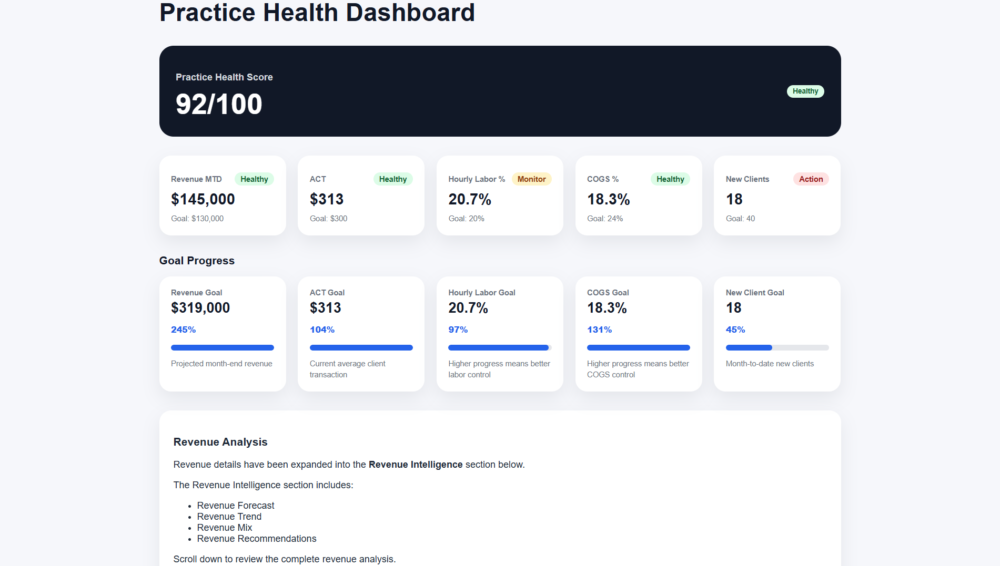
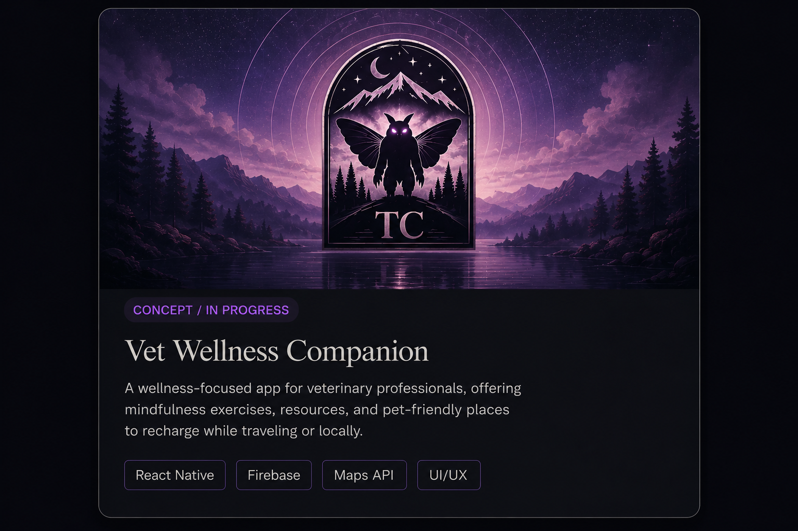

Frontend Developer, Business Operations Professional, and Systems Thinker building clean, intelligent, human-centered digital experiences with a focus on intuitive, easy-to-use design. After two decades in corporate leadership, I transitioned into tech to create thoughtful interfaces inspired by real-world systems, immersive storytelling, and operational problem solving—designing technology that feels both functional and deeply intentional.
Here's what you need to know about me.
Before moving into frontend development, I spent twenty years in veterinary medicine leading teams, solving operational problems, and learning how much good systems matter.
Now I’m bringing that experience into tech by building clean, thoughtful interfaces that are easy to use, visually memorable, and grounded in real-world needs.
I bring a unique combination of frontend development, operational leadership, and real-world problem solving, with experience managing teams, improving workflows, and building systems designed around the people who use them.

A veterinary operations dashboard designed to help practice owners and managers identify inefficiencies through revenue, appointments, labor, COGS, and average client transaction data, delivering actionable insights through clean, data-driven design.

A wellness-focused app for veterinary professionals, offering mindfulness exercises, mental health resources, and pet-friendly places to recharge while traveling or exploring locally, designed to support balance, recovery, and emotional wellbeing in a demanding industry.